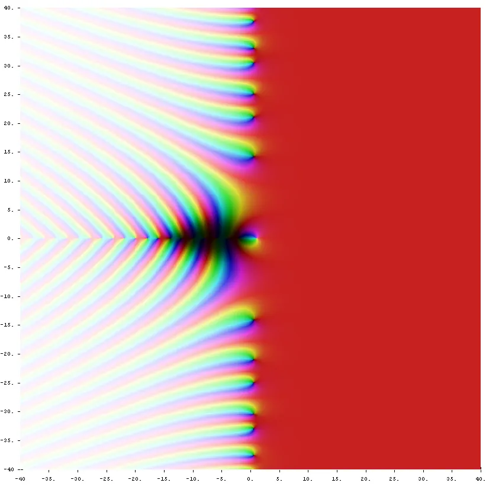

Terence Tao's first verdict on the Riemann proof: Lean-only, apparently Langlands-powered — and slow to digest
Terence Tao has weighed in on the week's three AI-assisted mathematics claims — and his verdict splits them sharply. The Euler blowup proof, he writes, is human-readable. The Navier–Stokes proof is technically readable but still needs a proper write-up. And the Generalized Riemann Hypothesis proof exists only as Lean code — its strategy, “from very initial analysis,” appears to draw on “the full power of modern developments on the Langlands program and arithmetic geometry.” Digestion, Tao writes, “will take some time.”
- Tao's post: published 20 Nov 2026 on his personal blog, What's new — the first public reading of the week's claims from a mathematician of his standing.
- Euler: Alpöge, Buckmaster and Coiculescu — a human-readable proof of finite-time blowup for the unforced 3D Euler equations, formalized in Lean.
- Navier–Stokes: Alpöge and Buckmaster — the strategy is to numerically build an approximate discretely self-similar solution, then use rigorous perturbation theory to reach an exact solution.
- Riemann: Alpöge alone, using an internal AI model — an enormous Lean-only proof of the Generalized Riemann Hypothesis, with no human-readable paper.
- Verification so far: MIT's Andrew Sutherland independently compiled all 175,187 Lean modules with no errors; the Lean kernel rechecked the proof using only the three standard axioms; a second checker accepted the export. The comparator audit is still pending.
What Tao actually said#
Tao posted on 20 November, listing the three results “in decreasing order of how ‘digested’ the results currently are.” First, Euler: “a human-readable proof of the finite time blowup for the unforced incompressible Euler equations in three dimensions,” formalized in Lean. Second, Navier–Stokes: “technically human-readable,” with “the general strategy of proof broadly clear” — but “more work needs to be done to create a proper, professionally written proof.” Last, Riemann: “an (enormous) Lean-only proof of the Generalized Riemann Hypothesis.”
Tao points readers to the Lean Zulip thread as “probably the best place to follow the efforts to verify the proof and extract the strategy of proof” — and to Buckmaster's Mastodon post for the first two results. His closing line sets the tempo: “I imagine the digestion process will take some time.”
The three results, ranked#
The most digested is the Euler result, from Alpöge, Buckmaster and Coiculescu, “with heavy AI assistance.” Their paper constructs smooth periodic initial data whose solution blows up in finite time: the velocity stays bounded while the vorticity at the origin tends to infinity. It is a conventionally written paper, with a Lean formalization alongside it.
The Navier–Stokes result, from Alpöge and Buckmaster, is one rung down: the proof follows “one of the expected paths to this result,” Tao writes — numerically build an approximate discretely self-similar solution, then use rigorous perturbation theory to convert it into an exact solution. Buckmaster is candid: “After last time, we couldn't risk waiting,” he posted on Mastodon, “so the Navier–Stokes write-up is unpolished and heavily LLM-assisted. Fortunately, once the numerical profile is in hand, the proof follows a well-trodden computer-assisted path.”
The Riemann result is a different kind of object: Alpöge generated it alone, “using an internal AI model,” and it exists only as Lean code — no paper, no human-readable argument, no narrative a mathematician can follow.

What the proof appears to do#
The genuinely new information in Tao's post is a first hint at what the Lean proof actually does. Its strategy, he writes, “from very initial analysis, appears to use the full power of modern developments on the Langlands program and arithmetic geometry.” The Langlands program is the vast web of conjectures linking number theory, representation theory and geometry. That it would apparently need its full modern power is striking. But every word is hedged — “from very initial analysis,” “appears to” — and it should be read that way. Nobody has yet extracted a human-readable strategy from the code; that extraction is what the Zulip thread is now attempting.
What is still unverified#
What has been checked is the machinery, not yet the meaning. MIT's Andrew Sutherland independently compiled all 175,187 Lean modules with no errors, the Lean kernel rechecked the proof, and a second checker accepted the export. Still awaited is the comparator run — an audit that checks the Lean statement actually says what the theorem says, and that the proof compiles under independent proof kernels. As Kevin Buzzard has pointed out, the first question is whether the Lean statement matches the actual theorem.
The institutional verdicts have not moved: the Clay Mathematics Institute still lists the hypothesis as unsolved, and its $1 million prize requires publication in a qualifying outlet, a wait of at least two years, and general acceptance by the global mathematics community. The Zulip thread itself is being fenced: its moderators, Tao notes, “are now focusing the discussion on the Lean-related aspects of the proof only.”
What to watch#
What happens next turns on the comparator run — if it passes, the Lean code really does prove the statement it claims; the first human-readable extraction of the strategy; whether Alpöge publishes a paper; and whether the Zulip thread converges on a strategy the wider community can examine. Until then, Tao's ranking stands as the soberest summary of the week: one proof you can read, one you can almost read, and one that only a machine has read so far.
Sources: Terence Tao, “Unforced Euler singularity, unforced Navier-Stokes singularity, and the Generalized Riemann Hypothesis,” What's new (20 Nov 2026); Lean Zulip thread, “Discussion: Alpöge Proves the Riemann Hypothesis”; Tristan Buckmaster, Mastodon post (20 Nov 2026); Alpöge, Buckmaster and Coiculescu, “Finite-Time Singularity Formation for the Three-Dimensional Euler Equations” (PDF); Alpöge and Buckmaster, Navier–Stokes repository (GitHub); Scientific American, “The AI Riemann hypothesis proof is almost certainly true, independent mathematicians attest”; Levent Alpöge, remark (PDF). Our earlier coverage: Riemann proof clears its first independent check, the original Claude claim, and the Navier–Stokes claim.